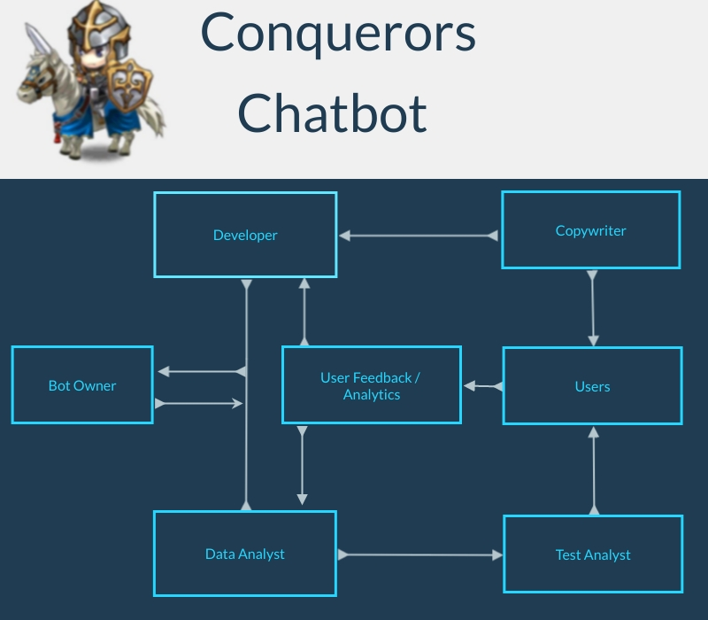

Roles
In today’s landscape, creating chatbots can be a relatively simple process depending on the functions that the customer requires the chatbot to perform. With improvements in the technology, there are now free and paid versions of chatbot platforms where individuals with limited, if any, programming or coding skills can use premade templates to create simple chatbots and embed the final product either on a single or multiple channels, such as a website or messenger apps like Twitter and Facebook (BotsCrew, nd, para 4).
Depending on the level of sophistication and functionality of a chatbot required, there may be anywhere from one to five or six different individuals working on the development of a chatbot. The two roles fundamental to a chatbot development process are the bot or project owner, and the chatbot developer. As the project scales upwards and as the commercial usage of the chatbot increases, other roles may be created such as copywriters/conversational designers, testing analysts, and data analysts/data scientists.

Bot Owner
The bot owner is responsible for overseeing the entire project, from creating a project plan, tracking the progress being made and liaising between the development team and the clients (flow.ai, nd). They will also work in conjunction with the development team and clients in order to ensure that the chatbot will work to continuously changing specifications and provide and implement plans to upscale the project if and when necessary.
Developer
The developer is responsible for the technical aspects of the chatbot, from coding and testing to ensuring that the chatbot is created to the client’s specifications (Seng, 2020). For smaller and basic chatbots, the developer will likely perform all major roles such as frontend/backend programming, user interface design, training and testing. However, as the project develops in scope and functionality, these roles will likely be allocated to separate individuals working collaboratively to produce the final product
Copywriters
While copywriters/conversational designers are less technical roles, they would be responsible for ensuring that the chatbot is able to communicate with customers effectively and efficiently in order to maximise the benefits gained from utilising a chatbot. This role is especially necessary for chatbots in the
Testing Analysts
Testing analysts are needed in order to ensure that the chatbot functions as expected, and that there are no issues that are likely to arise as the chatbot becomes more evolved through its learning processes. Testing analysts continue to be involved with the chatbot once it is live and in use by customers to ensure that the chatbot continues to work as expected due to the ongoing training and machine learning processes,
Data Analyst
The role of a Data Analyst may be needed when a business determines it needs to measure the impact that a Chatbot may have on their business good or bad. The role of the Data Analyst is also to gather relevant information in regards to the service or products. They often analyse metrics to reveal patterns and advise development or business decisions. They are tasked with creating reports, a data structure, and providing feedback as to where a chatbot may be improved in terms of functionality and user satisfaction.
For our chatbot, we have identified the need for one role, being the chatbot developer, and assigned that to one member, Cristopher Inostroza. Given the simple functionality and limited amount of information that this chatbot will be required to be trained on, as well as the fact that the team has only basic introductory knowledge of the IT industry and that we have only been working together for a relatively short time, it seemed more efficient to have one person develop the chatbot while the others played a more supportive role in terms of gathering information to train the chatbot and provide the relevant content needed for the intents. Given the basic proposed functions of the chatbot, the developer would be able to perform all these roles during the development process aside from the data analysis which is not necessary at this stage.